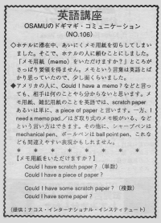

メモ用紙をいただけますか。
Osamu wanted to take notes but made the secretary confused. He didn’t know what a memo is because the word is English but the Japanese use it in a different way.
ホテルに滞在中、あいにくメモ用紙を切らしてしまいました。そこで、ホテルの人に頼むことにしました。「メモ用紙（memo）をいただけますか？」 ところがさっぱり要領を得ません。メモという言葉は英語とばかり思っていたので少し面喰らいました。
アメリカ人に、Could I have a memo? などと言っても、相手には何のことやら分からないと思います。メモ用紙、雑記用具のことを英語では、scratch paper あるいは単に、a piece of paper と言います。一方、I need a memo pad.／はぎ取り式のメモ帳がいる、などという言い方はできます。その他に、シャープペンは、mechanical pen、ボールペンは、ball point pen、これなども間違えやすい表現かもしれません。
メモ用紙をいただけますか？
Could I have scratch paper? （単数）
Could I have a piece of paper?
Could I have some scratch paper? （複数）
Could I have some paper?

| © 1995-2013 NACOS International Institute. All Rights Reserved. |